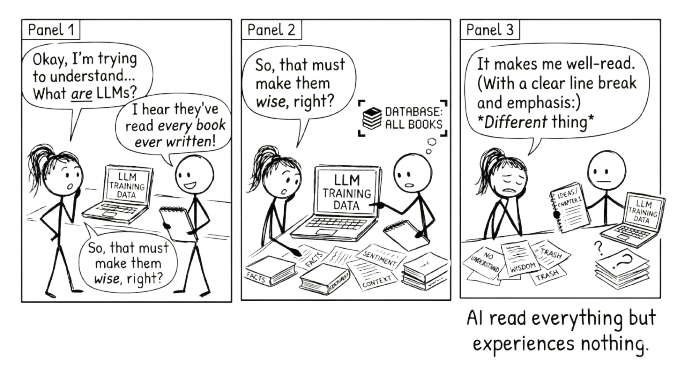

2 What Are Large Language Models?

A large language model is AI trained to predict the next word in a sentence.
That is the core idea. Everything else follows from it.
Fluency is not truth. The smoothest sentence and the most accurate sentence are produced by the exact same process.
From that single task, predicting the next word, these models learned to write essays, answer questions, translate languages, summarise documents, explain complex topics, and hold conversations. The gap between “predict the next word” and “do all of that” is where the interesting story lives.
2.1 How Predicting Words Becomes Something More
Think about what it takes to predict the next word well.
“The cat sat on the ___.” Easy. You guess “mat” because you have seen the pattern before.
“The capital of France is ___.” To get this right, you need to have absorbed a fact about the world.
“If you drop a glass, it will ___.” Now you need cause and effect.
“The patient presented with fever, joint pain, and a butterfly-shaped rash, which is consistent with ___.” Now you need specialised knowledge and the ability to connect symptoms to diagnoses.
Each of these is still word prediction. But to predict well, the model had to learn grammar, facts, reasoning patterns, argumentation structures, and different styles of communication. The training objective was simple. What emerged was not.
LLMs were trained on enormous amounts of text: books, articles, websites, academic papers, forums, code repositories. Billions of documents. By learning to predict what comes next across all of that text, they built an internal model of how language works, and of much of what language describes.
2.2 The Scale That Makes It Work
Three things make these models “large.”
First, the training data. Hundreds of billions of words, equivalent to millions of books. Second, the parameters. These are the patterns the model learned, numbered in the hundreds of billions. Think of each parameter as a tiny piece of knowledge: “in this kind of context, this word is more likely than that one.” Third, the computing power. Training a frontier model — the most advanced, state-of-the-art version — costs millions of dollars and takes months of continuous processing on thousands of specialised chips.
Scale matters because bigger models learn more subtle patterns. They handle more complex tasks. They generalise better to situations they were not explicitly trained on. This is the key insight: LLMs were trained on prediction, but they generalised to something that looks remarkably like reasoning.
2.3 One Direction at a Time
There is a detail about how LLMs process text that is worth understanding, because it has practical consequences for how you talk to them.
When you read a sentence, you take in the whole thing. You can glance back at the beginning while reading the end. LLMs cannot do this. They process text in one direction, left to right, one token (roughly one word or word-piece) at a time. Each word can only “see” the words that came before it, never the words that come after. This is called unidirectional attention, and it is a fundamental architectural choice that shapes everything the model can and cannot do.
This explains a surprising finding from recent research. When you repeat your question in a prompt — adding something like “Read the question again:” followed by the question a second time — the model reasons more accurately on complex tasks. The reason is structural. On the second pass, tokens in the repeated question can attend to everything that appeared between the two copies, including context and framing they could not see the first time around. The model effectively gets a second look at the problem, compensating for the limitation of only reading forward.
The practical takeaway is small but revealing. For reasoning-heavy tasks — arithmetic, logic, multi-step problems — repeating the key question once can improve results. More than twice degrades performance, as the model starts echoing rather than reasoning. And an explicit instruction like “Read the question again:” works better than simply pasting the question twice.
This is not a trick to memorise. It is an illustration of something deeper: the way you structure a prompt is not just about clarity for you. It shapes what the model can literally attend to. Understanding the architecture, even at this level, helps you understand why some prompts work better than others.
2.4 What They Can Do
LLMs are strong at tasks that involve language and pattern recognition.
They can generate text in nearly any style or format: emails, reports, stories, technical documentation. They can summarise long documents and extract key points. They can explain complex ideas at different levels of sophistication. They can translate between languages, not just word by word, but with awareness of meaning and context. They can write and debug code, because code is a language with patterns too.
When you ask an LLM to explain photosynthesis, it is not retrieving a stored answer. It is generating text word by word, predicting what would naturally come next in a good explanation of photosynthesis, based on the millions of explanations it absorbed during training. The result often looks like understanding. Sometimes it functionally is.
2.5 What They Cannot Do
Here is where it matters that you know what these models actually are.
They hallucinate. LLMs can state false information with complete confidence. They are not looking things up. They are predicting plausible-sounding text. When they do not know something, they do not say so. They generate what sounds right. This means you cannot treat their outputs as reliable without verification.
They reflect the biases in their training data. If the text they learned from contains stereotypes, blind spots, or skewed perspectives, those patterns show up in their outputs. Not always obviously.
They have no access to real-time information. An LLM’s knowledge stops at its training cutoff. It cannot tell you what happened yesterday unless it has been connected to external tools that can.
These are not minor caveats. They are fundamental to what these systems are. An LLM is a model of language, not a model of truth.
AI does not know when it is wrong. It generates plausible text with complete confidence whether the content is accurate or fabricated. Verification is always your responsibility.
2.6 Beyond Text
Modern LLMs are no longer text-only. Many can process images, PDFs, spreadsheets, and other files as inputs. Some can generate images. Some can speak and listen through audio interfaces.
This matters, but it is worth being precise about how.
Images, PDFs, and data files are inputs. They provide context. You can upload a chart and ask the AI to interpret it, or attach a contract and ask it to summarise the key terms. This is useful, and the same principles in this book apply: you still need to verify the output, still need to bring your own judgement, still need to stay in the conversation.
But context is not conversation. Uploading a document is closer to handing someone a file than to thinking alongside them. The conversational techniques in this book, pushing back, iterating, challenging, are fundamentally about the back-and-forth of language.
Where multimodal AI may change the nature of conversation itself is voice. Audio interfaces let you talk with AI rather than type. The rhythm is different. You interrupt. You think out loud. You correct yourself mid-sentence. For many people, this is closer to how they actually think, and it may turn out to be a more natural way to stay in the conversation loop than typing prompts into a text box.
The underlying process does not change. Whether you type or speak, upload a file or paste text, the principles are the same: bring your question, engage with what comes back, and own the result.
2.7 The Line Worth Remembering
They have read everything and experienced nothing.
That single sentence captures more about LLMs than most technical explanations. These models have processed more text than any human could read in a thousand lifetimes. They have seen how experts write, how arguments are structured, how evidence is presented. But they have never been wrong and learned from it. They have never felt confused and pushed through to clarity. They have never had a stake in being right.
This is not a flaw to be fixed in the next version. It is the nature of the technology. LLMs are extraordinarily capable pattern matchers trained on the written record of human thought. That makes them powerful tools. It also means they have real limits, limits that do not go away just because the outputs sound confident.
2.8 Why This Matters for You
If you understand that LLMs are sophisticated prediction engines, not omniscient oracles, you will use them differently.
You will not hand over a task and trust the output. You will use the model to generate a draft and then apply your own judgement. You will not ask it for the answer. You will ask it to help you think through the problem. You will recognise when the output is echoing a pattern rather than reflecting genuine reasoning, and you will push back.
The difference between someone who uses AI well and someone who uses it poorly is rarely about technical skill. It is about understanding what the tool actually is and what it is not.
That understanding is exactly what the next chapter builds on. Knowing what LLMs are, and are not, is the foundation for learning how to work with them. The question is not “what can AI do for me?” but “how should I think alongside this thing?” Chapter 3 takes up that question directly.